正餐
老黃豬腳大王
電話:03-5266188/0931218271
地址:新竹市北門街89號(與世界街交叉口)
他們豬腳有兩種, 一種是當歸湯, 另一種是原汁. 看著滾湯一直冒煙, 感覺就很過癮了
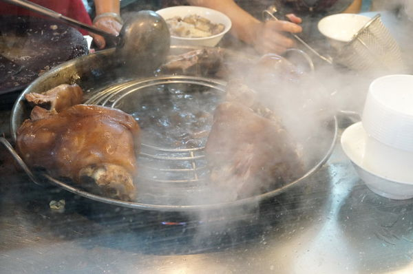因為我吃比較重口味，所以比較愛他們家的當歸豬腳麵線，豬腳再沾調辣椒醬油，覺得全身都熱起來了~~
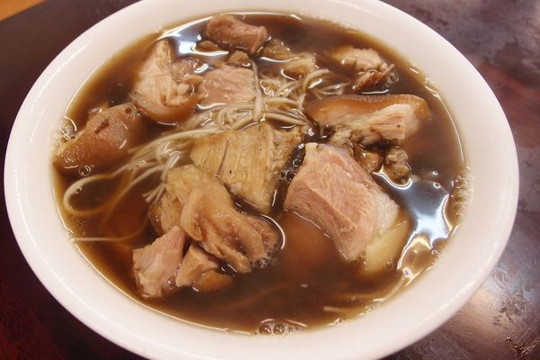阿桂羊牛雜
電話:03-5280850
地址:新竹市北門街63號
店家的餐點主要販售一些牛羊飯麵類、湯品、熱炒牛羊、湘菜、牛羊火鍋,凡點快炒類還能白飯免費吃到撐並送一碗羊肉或牛肉清湯,還蠻適合大食量的窮學生。
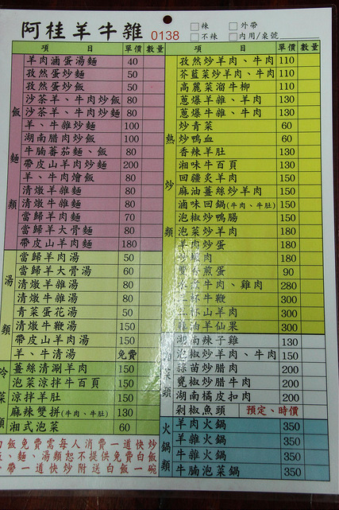沙茶羊肉炒飯 它炒飯真的超可口，每顆白飯都會裹上淡淡黃金色衣服，粒粒分明不濕黏。
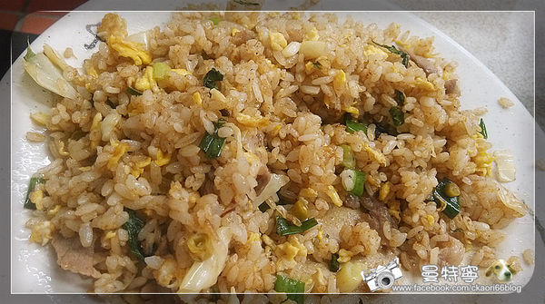當歸羊肉湯 看到當歸別以為在這季節喝會很燥熱，店家會依季節性來調整中藥食材，其實算蠻溫補，羊肉片不像市售冷凍火鍋片乾柴，也許是因為半油半肉下吃起來還蠻濕潤，非常好喝~~
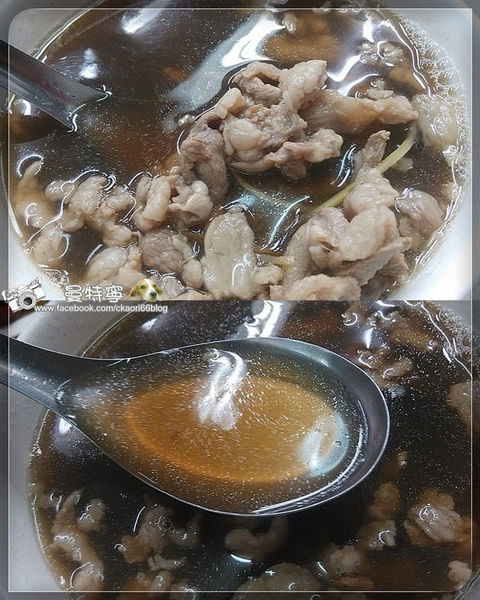點心
元祖郭家潤餅
電話:03-5222285
地址:新竹市城隍廟口（城隍廟在中山路上）
價格:35元/一個
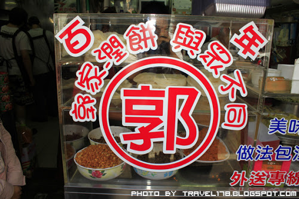生意非常好常常會大排長龍，不過店家做潤餅的速度非常快，不用擔心會排太久~
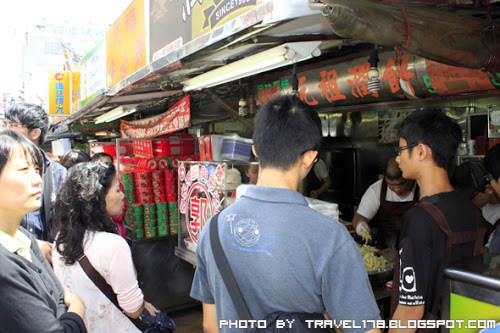吃在嘴裏潤餅皮厚實Q勁不易破還可以吃到麵粉香，拿來包內餡也不易濕透餅皮，內餡蛋酥吃起來喀茲喀茲甜甜的，脆脆的口感增添咬勁，蔬菜吃起來也相當清甜多汁，忍不住一口接一口把它吃完了，非常好吃~
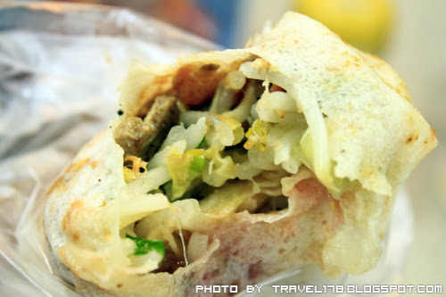冰品
田庄桑椹冰店
電話:0932378278
地址:新竹市南大路429號
營業時間:10:00~23:00
看一下他們的菜單, 有剉冰系列/豆花/冰沙夏天消暑款式, 另外冬天就改為熱湯系列~ 傳統冰與桑椹冰從35~80元之間, 在價格上跟其他店差不多. 還有他們桑椹汁也有獨立瓶裝可以買回家啊.
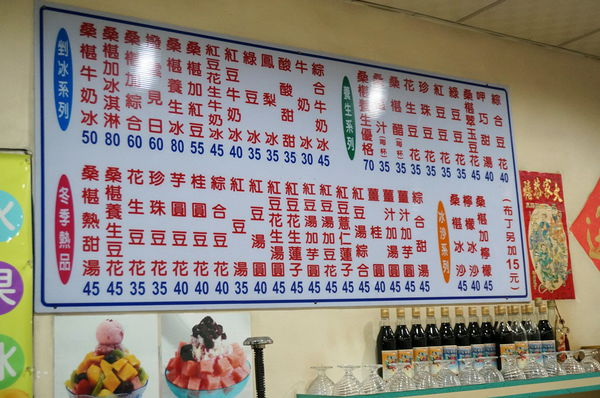我最愛的就是桑椹牛奶冰 50元, 白裡透紅的冰山 + 山上黑得發亮桑椹果, 是不是很誘人呢?
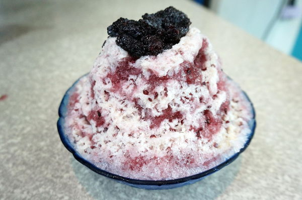桑椹牛奶冰還有愛玉及粉粿配料. 愛玉是較沒有味道, 配清冰吃比較OK. 另外粉粿是軟綿有黏性~
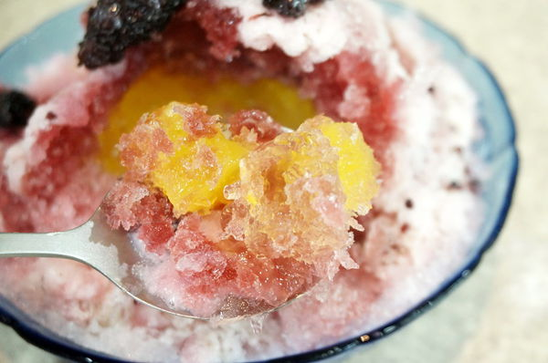桑葚冰真的非常消暑美味，有機會一定要去品嘗喔~~^ ^